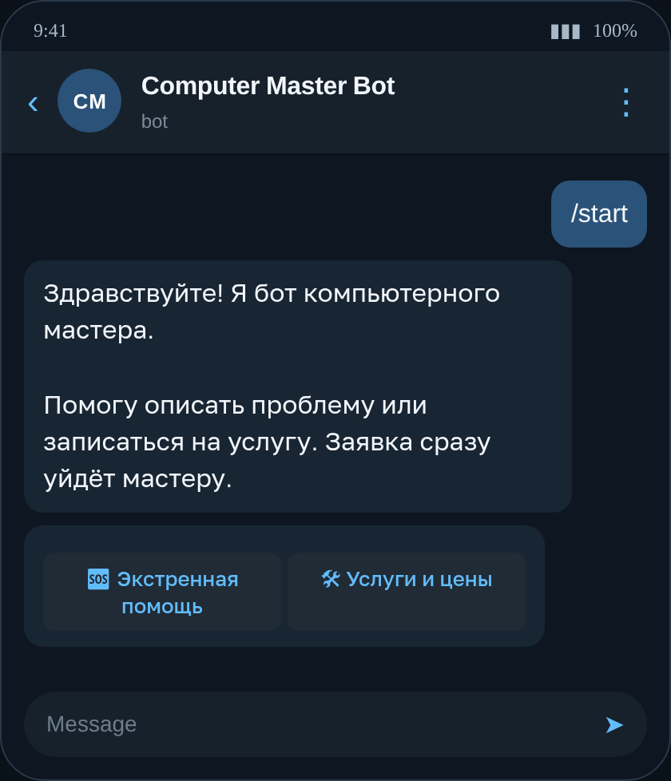
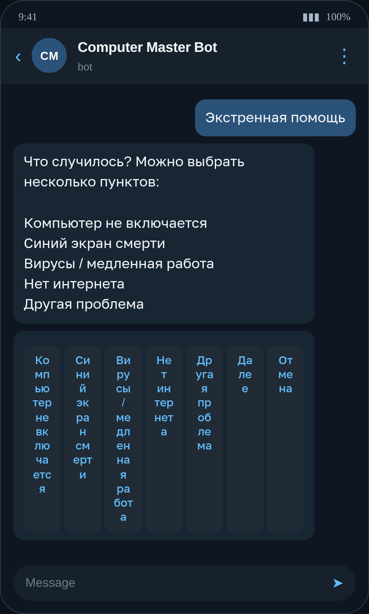

Диалог
telegram / computer-masterlong polling
user
/start
bot
Здравствуйте! Я бот компьютерного мастера. Помогу описать проблему или записаться на услугу. Заявка сразу уйдёт мастеру.
user
Экстренная помощь
bot
Что случилось? Можно выбрать несколько пунктов: Компьютер не включается Синий экран смерти Вирусы / медленная работа Нет интернета Другая проблема
system
→ заявка уходит в MASTER_CHAT_ID
Экраны


Что умеет
- Показывает прайс из отдельного use case.
- Принимает экстренную заявку по пяти категориям проблем.
- Проводит запись: услуга → дата → время → телефон.
- Отправляет мастеру имя, username, ID и состав запроса.
- Даёт мастеру inline-кнопку «Написать клиенту».
- Держит состояние диалога между callback-кнопками.
Как устроено
src/index.tslong polling, состояние, экраны, клавиатуры
src/appпрайс как use case — можно заменить на БД или API
Telegraminline-кнопки, request_contact, HTML-разметка
Мастеротдельное сообщение с заявкой и ссылкой на чат
file tree8 строк
src/
├── app/
│ └── show-prices.use-case.ts
└── index.ts
├── main menu
├── emergency flow
├── booking flow
└── notify masterЧто реально, а что mock
Ниже — фактическое состояние проекта. Всё, что помечено как mock или отсутствует, не выдаётся за готовую функцию.
| Пункт | Состояние |
|---|---|
| Данные | mock прайс и категории — константы в коде |
| Состояние | ограничение Map в памяти, сбрасывается при перезапуске |
| Заявки | нет не сохраняются, только отправляются в Telegram |
| Мастера | ограничение один MASTER_CHAT_ID |
| Оплата | нет нет |
Как читать таблицу. «Не готово» — реализации нет в репозитории. «Ограничение» — функция есть, но работает в узких рамках. Это проверяется по README и коду.
Запуск
.env
BOT_TOKEN=123456:AA...
MASTER_CHAT_ID=123456789terminal
bun install
cp .env.example .env
bun run startЧто дальше
- SQLite для заявок и истории.
- Статусы: новая → в работе → закрыта.
- Несколько мастеров и распределение по городу.
- Напоминание клиенту за час до визита.